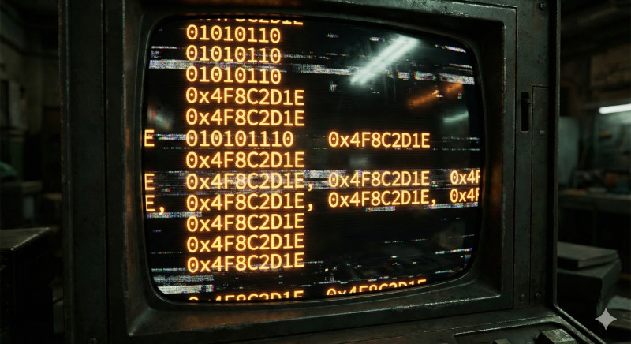
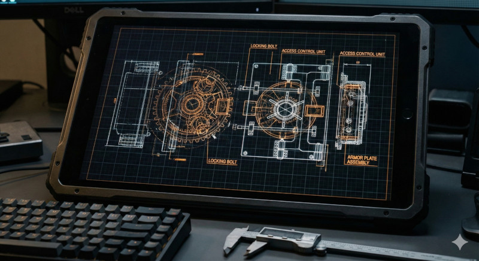

Decodificador
¿Encontraste un mensaje cifrado en Base64, César o Binario? Pégalo aquí para traducir el lenguaje encriptado a texto legible.
Iniciar SistemaVisualizador Espectral
Analiza imágenes en busca de esteganografía o manipula el contraste para revelar texto oculto en evidencias visuales.
Abrir Lente

Bóveda de Datos
[EN DESARROLLO] Una base de datos segura para cruzar huellas digitales y perfiles de sospechosos. Próximamente.
Bloqueado